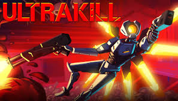

WARNING: Viewer Discression Advised
General Info
ULTRAKILL is a fast-paced old school first-person shooter developed by Arsi "Hakita" Patala and published by New Blood Interactive. You play as V1, a combat machine fueled by blood who has ventured into the depths of Hell after the extinction of humanity. Hell abounds with demons and tormented souls, sources of blood that you must rend apart in order to refuel yourself and survive.
Weapons
Currently there are 5 base guns in the game, with 3 variations for each of them, not including the alternate variants for the Revolver, Shotgun and Nailgun You find their base forms in specfic levels, with variations being bought at the terminal after unlocking the base form (Except for arms). Alternate variants are secret (optional) unlockables. Below, there is a list of all base weapons in the game.
- Revolver
- Shotgun
- Nailgun
- Railcannon
- Rocket Launcher
- Arms
Soundtrack
Much of the soundtrack is fast-paced metal or rock with breakbeat, mixed with some calm songs interspersed throughout. Many of the songs use MIDI tracks as a base, overlaying actual instruments to add depth, giving the game's soundtrack its classic yet modern feel. Frequently sampled by ULTRAKILL's songs is the Amen break, an insanely widespread drum sample that is frequently used in popular music.
Enemies
ULTRAKILL offers a variety of enemies that differ vastly in appearance and behavior. They can be categorized into different types:
- Husks
- Demons
- Machines
- Angles
- Prime Souls
